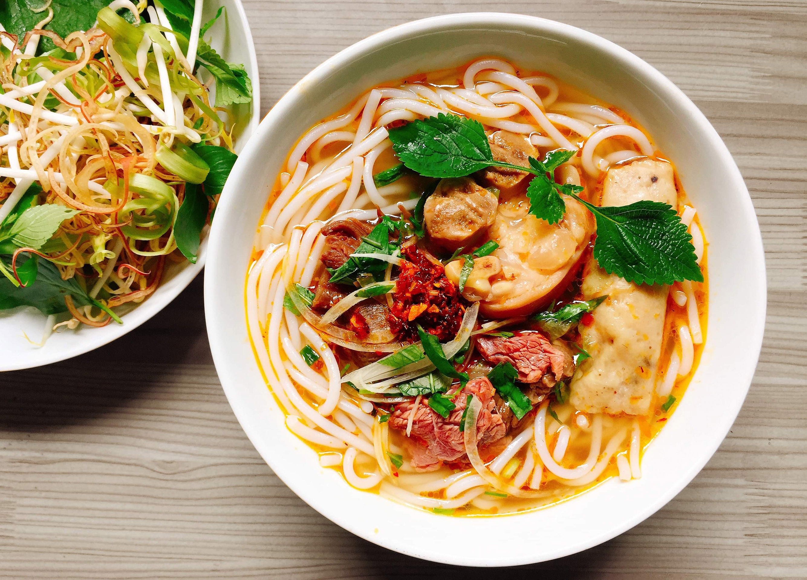

Ramen
Cocina tradicional japonesa en casa... con una vueltita
Características: Principal
Tiempo de cocinado: 2h 30min
Hervido, Japonés
Ingredientes
- 1 paquete de fideos chinos
- 1 pieza de carne de cerdo
- 1 puñado de cebolleta verde picada
- 2 cucharadas soperas de salsa de soja
- 1 cucharada sopera de sake (vino japonés)
- 1 puñado de brotes de bambú
- 1 puñado de komatsuna (espinaca japonesa)
- 1 unidad de huevo cocido
- 2 litros de agua
- Huesos de pollo (carcasas)
- 1 diente de ajo
- 1 cucharada postre de jengibre rallado
- 1 unidad de cebolleta (solo la parte verde)
- 1 unidad de zanahoria grande
- 1 unidad de cebolla
- Algas kombu al gusto
Preparación
- Lo primero que vas a tener que hacer para realizar esta receta de ramen fácil es preparar el caldo. Para ello, coge una cazuela grande, llénala de agua hasta la mitad aproximadamente y ponla a hervir. Cuando hierva, añade los huesos de pollo, el ajo pelado, el jengibre, la cebolla pelada y cortada por la mitad, la zanahoria pelada y cortada en rodajas, y las algas kombu al gusto, remúevelo todo y deja que se cocine a fuego lento durante cuatro horas. Después cuélalo, déjalo enfriar y desengrásalo retirando la grasa que se habrá solidificado en la superficie.
- Mientras se hace el caldo, cuece la salsa de soja y el sake con la pieza de carne de cerdo escogida. Puedes utilizar la parte que más te guste. Cuando esté hecha, reserva la carne por un lado y la salsa que ha quedado por otro. Incorpora esta salsa del ramen casero a un bol grande y agrega la cebolleta verde picada.
- Para seguir con la receta de ramen tradicional, coge otra cazuela, pon agua a hervir y cuece los fídeos cuando alcance el punto de ebullición. Deberás cocinar los fideos para ramen durante dos minutos con la olla tapada, así se harán más rápido.
- Mientras tanto, vierte un poco de caldo en la salsa de soja y sake y mézclalo todo bien. Cuando los fideos estén listos, retíralos del fuego, cuélalos y pásales un poco de agua fría para parar la cocción. Luego, colócalos en ese mismo bol donde tienes la mezcla de salsas y el caldo de pollo.
- Ahora corta la pieza de cerdo en trozos finos e incorpóralos a los fideos, añade los brotes de bambú, las hojas de komatsuna previamente hervidas y escurridas, y el huevo cocido cortado por la mitad. Si lo deseas, puedes añadir otros ingredientes como maíz, trozos de zanahoria, etc.
Carlos Zero
Fan de la cocina asiática y coleccionista de experiencias gastronómicas. Reinterpreto recetas y aún no he quemado la cocina. ¡ÉXITO!
Ver perfil